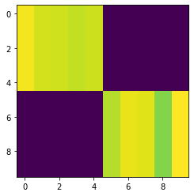
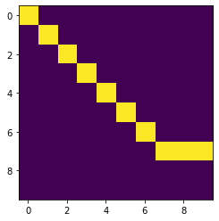
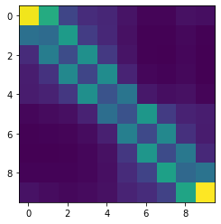

Torch-Struct: Structured Prediction Library¶


A library of tested, GPU implementations of core structured prediction algorithms for deep learning applications.
HMM / LinearChain-CRF
HSMM / SemiMarkov-CRF
Dependency Tree-CRF
PCFG Binary Tree-CRF
…
Designed to be used as efficient batched layers in other PyTorch code.
Tutorial paper describing methodology.
Getting Started¶
!pip install -qU git+https://github.com/harvardnlp/pytorch-struct
# Optional CUDA kernels for FastLogSemiring
!pip install -qU git+https://github.com/harvardnlp/genbmm
# For plotting.
!pip install -q matplotlib
import torch
from torch_struct import DependencyCRF, LinearChainCRF
import matplotlib.pyplot as plt
def show(x): plt.imshow(x.detach())
# Make some data.
vals = torch.zeros(2, 10, 10) + 1e-5
vals[:, :5, :5] = torch.rand(5)
vals[:, 5:, 5:] = torch.rand(5)
dist = DependencyCRF(vals.log())
show(dist.log_potentials[0])

# Compute marginals
show(dist.marginals[0])

# Compute argmax
show(dist.argmax.detach()[0])

# Compute scoring and enumeration (forward / inside)
log_partition = dist.partition
max_score = dist.log_prob(dist.argmax)
# Compute samples
show(dist.sample((1,)).detach()[0, 0])

# Padding/Masking built into library.
dist = DependencyCRF(vals, lengths=torch.tensor([10, 7]))
show(dist.marginals[0])
plt.show()
show(dist.marginals[1])


# Many other structured prediction approaches
chain = torch.zeros(2, 10, 10, 10) + 1e-5
chain[:, :, :, :] = vals.unsqueeze(-1).exp()
chain[:, :, :, :] += torch.eye(10, 10).view(1, 1, 10, 10)
chain[:, 0, :, 0] = 1
chain[:, -1,9, :] = 1
chain = chain.log()
dist = LinearChainCRF(chain)
show(dist.marginals.detach()[0].sum(-1))

Library¶
Full docs: http://nlp.seas.harvard.edu/pytorch-struct/
Current distributions implemented:
LinearChainCRF
SemiMarkovCRF
DependencyCRF
NonProjectiveDependencyCRF
TreeCRF
NeuralPCFG / NeuralHMM
Each distribution includes:
Argmax, sampling, entropy, partition, masking, log_probs, k-max
Extensions:
Integration with
torchtext,pytorch-transformers,dglAdapters for generative structured models (CFG / HMM / HSMM)
Common tree structured parameterizations TreeLSTM / SpanLSTM
Low-level API:¶
Everything implemented through semiring dynamic programming.
Log Marginals
Max and MAP computation
Sampling through specialized backprop
Entropy and first-order semirings.
Examples¶

Citation¶
@misc{alex2020torchstruct,
title={Torch-Struct: Deep Structured Prediction Library},
author={Alexander M. Rush},
year={2020},
eprint={2002.00876},
archivePrefix={arXiv},
primaryClass={cs.CL}
}